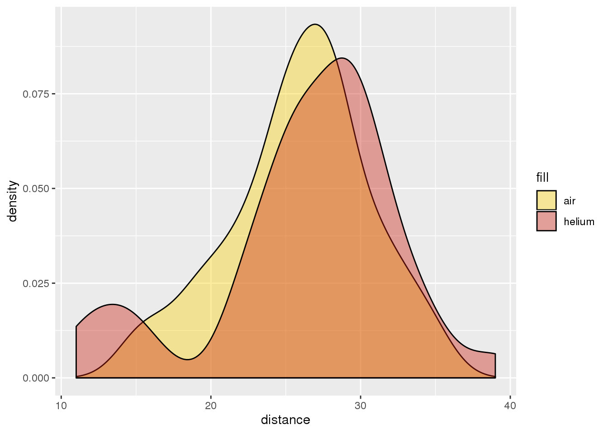

After the 1976 Pro Bowl, where people questions if the football was filled with helium, some intrepid Ohio State students investigated whether a football filled with helium would fly farther than one filled with air. Their results are displayed in the density plot below.
library(tidyverse)
library(openintro)
library(wesanderson)data("helium")
helium2 <- helium %>% pivot_longer(c(air, helium), names_to = "fill", values_to = "distance")
helium2 %>% ggplot(aes(distance, fill = fill)) +
geom_density(alpha = .4) +
scale_fill_manual(values = wes_palette("BottleRocket2", n =2))